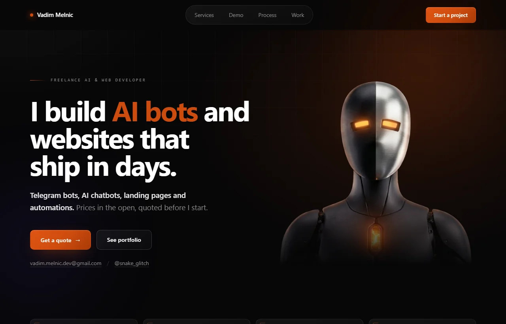
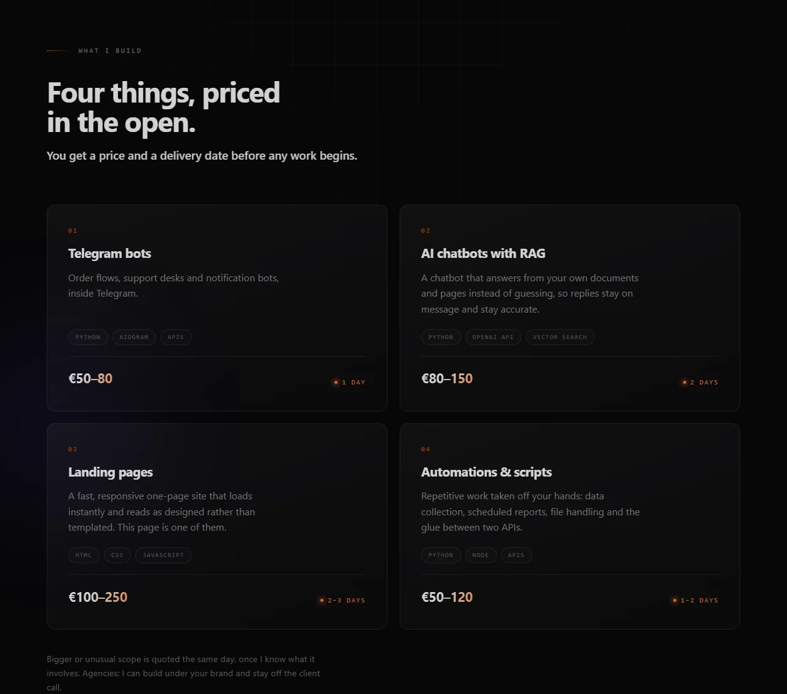
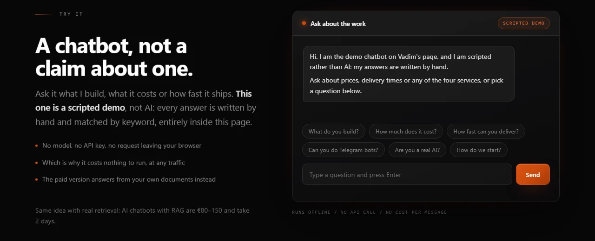
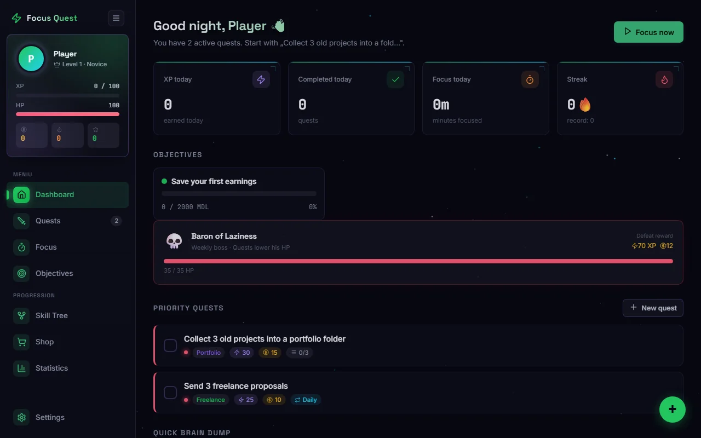
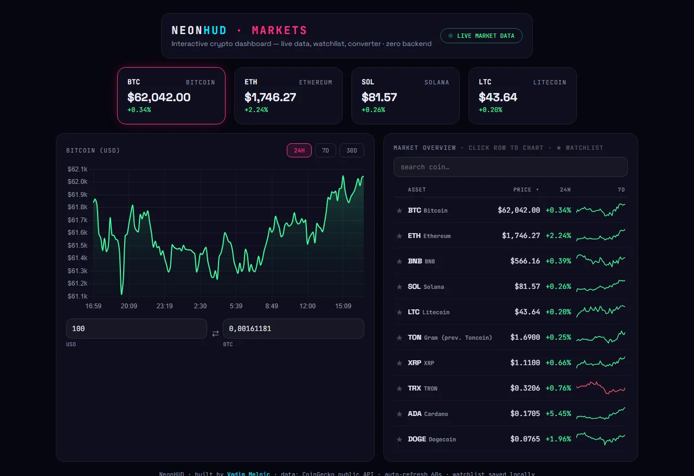
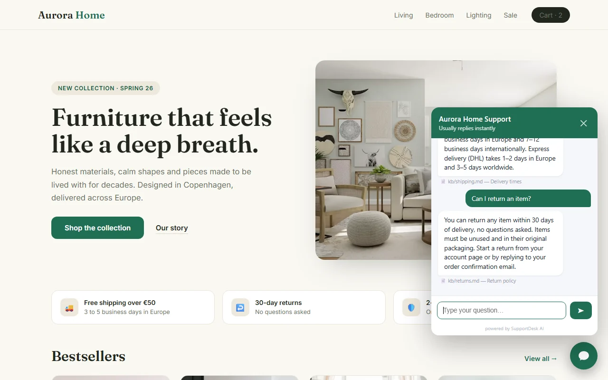
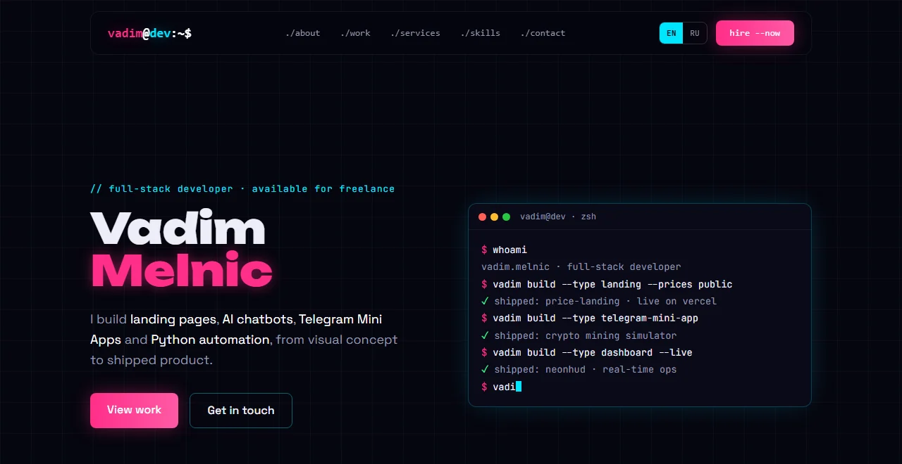
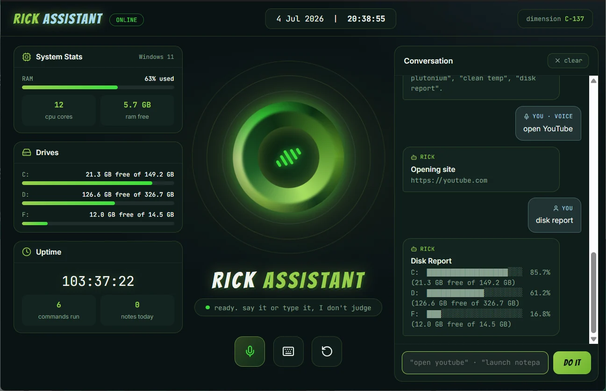

// full-stack developer · available for freelance
Vadim
Melnic
I build landing pages, AI chatbots, Telegram Mini Apps and Python automation, from visual concept to shipped product.
7
case_studies
4
specialty_areas
<24h
response_time
3
languages
// 01 · about
Who I am
I'm Vadim Melnic, a self-taught full-stack developer who owns projects end to end. Visual concept, art direction and the working build, with one person accountable for the final result instead of a relay race.
I care a lot about interfaces that stay fast on low-end devices. That matters for Telegram WebViews, where a lot of my work lives, and it shapes everything from asset budgets to animation choices.
Currently open for freelance on Fiverr and Upwork: mini apps, automation scripts, dashboards and websites.
// 02 · services
What I can build for you
Telegram Mini Apps & Games
Interactive TMAs with Telegram SDK, Three.js/PixiJS rendering, haptics, running at 60fps even on budget phones.
Python Automation & AI
Automation scripts, CLI assistants and AI chatbots grounded in your own data. Documented and easy to extend per client.
Websites & Landing Pages
Custom sites, landing pages and live dashboards, designed and coded from scratch. Fast, responsive and easy to host. This site is one of them.
UI/UX & Motion
Neon visual identities with purposeful micro-animations, built with Anime.js or GSAP and always respecting reduced motion.
// 03 · selected work
Case studies
Self-directed projects built to sharpen and demonstrate my stack.

live landing · cursor-tracking hero · one static file
Services Landing: Priced-in-the-Open Freelance Page
Challenge: most freelance pages hide the price behind "contact us", so the visitor has to start a conversation before they know if it is even worth their time. I wanted the opposite: the whole offer readable in one scroll.
Result: a conversion-focused landing page with four service cards carrying real price bands and delivery times, a written-only process section, and a working chatbot demo that runs entirely in the browser: keyword-matched answers, no model, no API key, nothing leaving the page, so it costs nothing at any traffic level. The hero avatar tracks the cursor, a scroll-progress rail follows the reader, and every reveal respects prefers-reduced-motion. One HTML file, zero dependencies, zero backend, deployed on Vercel.

four services · public price bands · delivery times

in-page chatbot demo · offline · no api call · no cost per message

player app · dfx token · mining hall · live price
DROPFIX: Crypto Mining Platform
Challenge: build a complete play-to-earn mining platform as a Telegram Mini App. Not just the game, but the token economy, real crypto payment rails and the operations tools behind it.
Result: a shipped two-sided product. Player side: DFX token with live price feed and 24h charts, a mining hall of tiered animated GPU rigs, real BTC / LTC / USDT deposits & withdrawals (TRC20 & BEP20, per-user QR addresses), and a wheel-of-fortune with purchasable spin credits. Operator side: a full admin console: role management, withdrawal review queue, user broadcast, audit log, SQL runner and revenue analytics.

admin console · roles · balances · withdrawal review

analytics · deposits · withdrawals · user growth

real deposits · trc20/bep20 + qr

wheel of fortune · monetized spins

Focus Quest: Gamified Productivity App
Challenge: task managers feel flat and don't motivate follow-through, so I turned productivity into an RPG.
Result: a full native desktop app: XP & HP system, weekly boss fights, skill tree, streaks, focus timer, voice commands and system-tray integration. Django backend + PyWebView native shell.

10 coins · timeframes · watchlist · sparklines · converter
NeonHUD: Interactive Crypto Markets App
Challenge: a full trading-desk experience on real market data: interactive, stateful and fast, from a single HTML file with no backend.
Result: 10 live coins from the CoinGecko API with click-to-chart selection, 24H/7D/30D timeframes, search, sortable columns, 7-day sparklines per coin, a persistent ★ watchlist (localStorage) and a live USD ⇄ coin converter, plus graceful simulated fallback when the API is unreachable.

live conversation · every answer cites its source doc
SupportDesk AI: Support Chatbot Widget
Challenge: businesses want an AI support chat on their site, but pure-LLM bots hallucinate prices and policies, and that is a real liability.
Result: an embeddable chat widget with a retrieval-grounded brain: it indexes the client's own docs and every answer cites its source. An optional AI mode composes replies strictly from retrieved context, with automatic fallback. Two-line embed on any site, brandable, zero dependencies.

you're looking at it · designed & built from scratch
This Website: Custom Portfolio Site
Challenge: stand out among template portfolios with a fully custom identity, designed, built and shipped without any site builder.
Result: a complete design system (Unbounded / Space Grotesk / JetBrains Mono, neon pink & cyan), an animated terminal hero, an EN/RU language switch, scroll-reveal motion that respects prefers-reduced-motion, keyboard-accessible screenshot lightbox, responsive from 375px up, optimized WebP images. One HTML file, no build step, deployed via GitHub Actions. I build landing pages and sites like this for clients.

voice + text commands · live system widgets · portal-green ui
Rick Assistant: Voice Desktop Assistant
Challenge: a JARVIS for your PC that actually does things, with a personality of its own instead of another gray tray utility.
Result: a voice-controlled assistant with an animated portal at its core. Say or type "open youtube", "launch notepad" or "search anything" and it acts, answers out loud, and logs it all in a chat. Live dashboard widgets show RAM, drives and uptime, while file automations (organize downloads, clean temp, batch rename) preview as dry runs before touching anything. New commands drop in as single Python functions.
// 04 · skills
Tools I work with
// 05 · contact
Let's build something
Open for freelance: landing pages, AI chatbots, Telegram Mini Apps, automation and dashboards. Free scoping, fixed quotes, response within 24h.